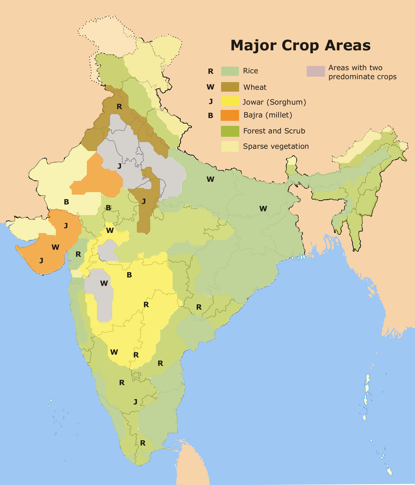

Millets are one of the oldest foods known to humans. These are the small-seeded hardy crops belonging to gramineae family which can grow well in dry zones/rain-fed areas under marginal conditions of soil fertility and moisture. Due to their short growing season, these can develop from seeds to ready to harvest crops in about 65 days. This highly beneficial characteristic of the millets is of vital importance in thickly populated regions of the world. If stored properly, millets can keep well for two years or beyond. Growth Habits:-Millets are annual grasses. Proso millet grows to a height of approximately 40 in. and has a hollow stem. Both stems and leaves are curved with short hairs. Proso millet has a large, open panicle inflorescence. When the grain is threshed, most of the seed remains enclosed in the inner hull. Hulls are extremely variable in color and, depending on the variety, may be white, red, yellow, brown or striped. Foxtail millet has slender, erect leafy stems and may grow up to 50 in. tall. The inflorescence is a dense, bristly panicle resembling the panicles of weedy foxtails. As in proso millet, the seeds are enclosed in the hull and also range in color from creamy white, red, yellow or dark purple. Both proso and foxtail millet are highly self-pollinated but have been known to occasionally outcross. Proso and foxtail millet are short season crops. In Minnesota and Wisconsin, proso millet will mature in 70 to 90 days from planting, depending on the variety. Foxtail millet requires approximately 60 days to reach the heading stage. Environment Requirements:- A. Climate: Millets require warm temperatures for germination and development and are sensitive to frost. For these reasons, they are normally planted from mid-June to mid-July in Minnesota and Wisconsin. Optimum soil temperatures for seed germination are between 68 and 86°F. Proso and foxtail millet are efficient users of water and grow well in areas of low moisture, partly because they are early and thereby avoid periods of drought. Millets are often grown as catch crops where other crops have failed or planting is delayed due to unfavorable weather. B. Soil: Millets grow well on well-drained loamy soils. They will not tolerate water-logged soils or extreme drought. Proso millet does not perform well on coarse, sandy soils. C. Seed Preparation and Germination: A fungicide will provide protection against head smut (Sphacelothaca destruens) and may increase seedling survival. Cultural Practices:- A. Seedbed Preparation: Seedbed preparation for millet is similar to that for spring-seeded small grains. Weeds should be controlled prior to planting and the seedbed should be firm and well-worked. Since millets are planted late in the season, spring plowing and cultivation for weed control are practical. B. Seeding Date: Suggested seeding dates in Minnesota and Wisconsin range from June 15 to July 15. Seeding later in the season may be risky due to early frosts, and yields may be lower than with earlier plantings. Millet is best established when soil temperatures reach 65°F at a depth of one in. C. Method and Date of Seeding: A seeding rate of 20 lb/acre (25 seeds/ft 2 ) is recommended for proso millet. Foxtail 2 millet should be sown at a rate of 15 lb/acre (75 seeds/ft ). Millets are normally seeded with a grain drill at a depth of one in. Even though the seed is small, it can develop extreme elongation of the first internode and emerge from I in. and even deeper unless a hard crust forms. Press wheels on the drill will increase seedbed firmness and aid in stand establishment. Millets compete poorly with weeds; therefore, high seeding rates are necessary to establish a dense stand. D. Fertility and Lime Requirements: Nitrogen is generally the most limiting nutrient in millet production. Rates of nitrogen should be based on yield goals and cropping history (Table 3). Excess nitrogen, whether applied or residual, may result in lodging. Allow for nitrogen applied as manure or other waste. Phosphorus and potassium should be applied as needed based on soil recommendations (Table 4). Drill row applications of fertilizer (except straight phosphorus fertilizers) may cause seedling injury and are not recommended. A pH of 5.6 or higher is recommended for millet. 